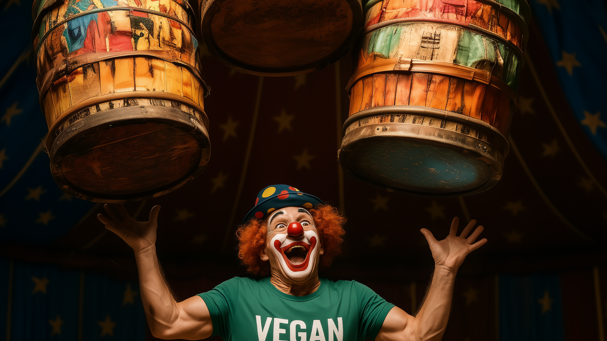

Common Ingredients in Vegan Protein Powder
Plant-based protein tubs read like chemistry bingo, but most labels orbit the same solar system of ingredients. Here’s the field guide so you know what you’re swirling into your shaker instead of guessing at green mystery dust.
Pea protein isolate is the heavyweight because its leucine quota punches near whey levels and its digestible indispensable amino acid score climbs close enough to animal protein that your muscles won’t notice the species switch. A 2024 human trial clocked pea DIAAS respectably high alongside casein, proving those yellow legumes don’t just look buff—they digest that way too. *
Rice protein tags in for completeness. By itself its DIAAS falls under 75, but paired with pea it plugs the methionine and lysine potholes, which is why blends like Orgain Organic Plant-Based Protein Powder list both on the front label. A 2023 review on protein quality shows strategic combos of low-score grains and higher-score legumes nudge the final score into the good-enough zone. *
Hemp, pumpkin seed, and sunflower seed proteins add triple duty: extra arginine for nitric-oxide blood flow, a splash of omega-3 precursors, and a marketing halo strong enough to earn shelf swagger in blends like Sunwarrior Warrior Blend. Hemp’s amino map isn’t perfect—DIAAS lands below soy—but analysis of Canadian hempseed still shows 24% essential amino acids, making it a solid bench player. *
Sweetness is where brands fight sugar wars. Stevia tops the roster because EFSA okayed up to 4 mg per kilo body weight for all 60 steviol glycosides, meaning you can sip flavored shakes without triggering the carb police. Monk fruit, starring in KOS Organic Plant Protein, brings a rounder sweetness with zero calories and no bitter back-kick. *
Thickeners and texture magicians follow: xanthan or guar gum for milkshake body, inulin or acacia fiber to keep gut bugs partying, plus digestive enzymes like bromelain and papain so a high-protein slug doesn’t park like wet cement. You’ll spot these all-star extras inside Garden of Life Raw Organic Protein where probiotics hitch a ride to bolster absorption.
Safety nets round out the label: B12, D, iron or Clean Label badges for heavy-metal screening. Minimalist tubs like Truvani Plant-Based Protein Powder skip fortification entirely for an ultra-short ingredient list. *
Bottom line: most vegan powders are built from a pea-rice or pea-seed skeleton, flavored with natural sweeteners, thickened for dessert-like mouthfeel, and—if reputable—screened for contaminants. Learn these usual suspects and you can decode any label in under ten seconds, leaving more time to lift something heavier than your blender.